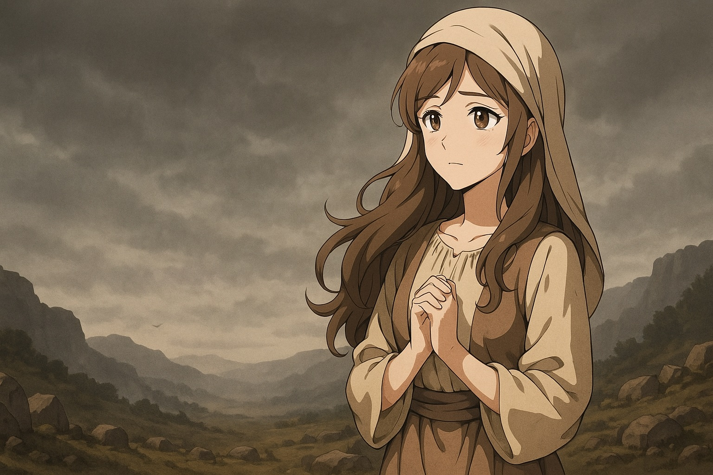
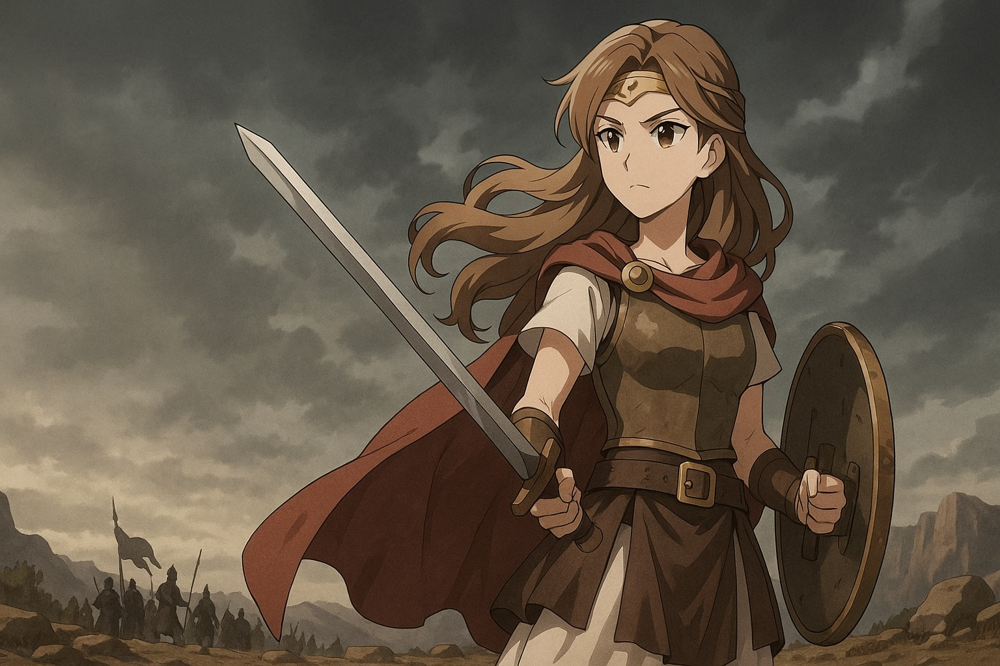
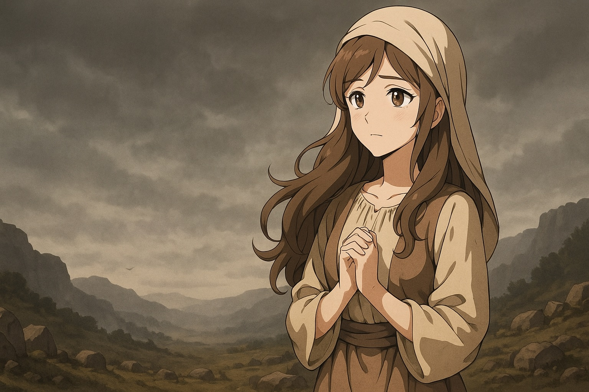
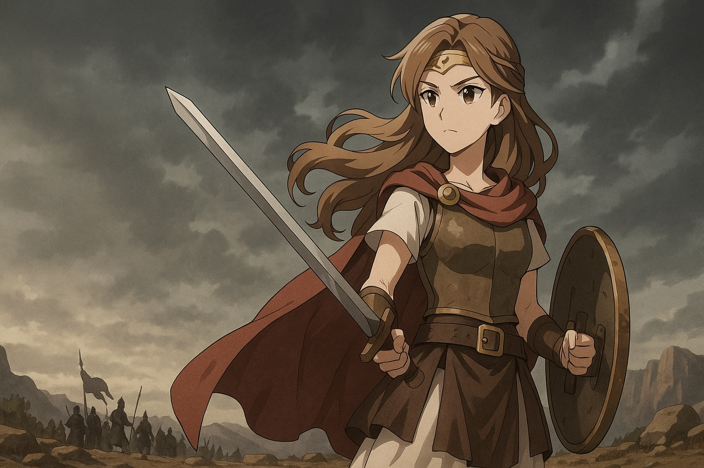

Rainha Ester
Ester foi uma jovem judia que se tornou rainha da Pérsia e salvou seu povo de um plano de extermínio. Quando o perverso Hamã convenceu o rei a matar todos os judeus, Ester, com coragem e sabedoria, arriscou a própria vida para interceder junto ao rei. Graças à sua ação, os judeus foram salvos. Sua história é celebrada até hoje na festa judaica do Purim e é exemplo de fé, coragem e liderança.
Maria de Betânia
Maria de Betânia foi uma seguidora de Jesus e irmã de Marta e Lázaro. Ela é conhecida por um gesto de profunda devoção: ungiu os pés de Jesus com um perfume caro (nardo puro) e os enxugou com seus cabelos (João 12:1–8). Esse ato simbolizou amor, humildade e preparação de Jesus para a sua morte. Enquanto alguns criticaram o gesto por ser "desperdício", Jesus a defendeu, dizendo que ela havia feito algo belo e significativo. Maria é lembrada como exemplo de adoração sincera e sensível à presença de Cristo.
Miriã
Miriã foi irmã de Moisés e Arão, profetisa e líder entre os israelitas. Ajudou a salvar Moisés bebê, liderou o povo em louvor após o Mar Vermelho e, apesar de ter sido punida por criticar Moisés, foi curada. É lembrada por sua fé e liderança.
Maria
Maria, mãe de Jesus, é uma das figuras mais importantes da Bíblia. Era uma jovem humilde de Nazaré, escolhida por Deus para ser a mãe do Salvador. Grávida por obra do Espírito Santo, ela deu à luz Jesus em Belém. Maria acompanhou Jesus durante sua vida, ministério, morte e ressurreição. É exemplo de fé, obediência e humildade, sendo muito respeitada no cristianismo, especialmente no catolicismo.
Sara
Sara foi esposa de Abraão e é considerada a matriarca do povo de Israel. Mesmo sendo estéril e já idosa, Deus prometeu que ela teria um filho. Com 90 anos, deu à luz Isaque, cumprindo a promessa divina. Sua história simboliza fé, paciência e o cumprimento das promessas de Deus, mesmo quando parecem impossíveis.
Débora
Débora foi uma profetisa e juíza de Israel, descrita no Livro de Juízes (capítulo 4 e 5). Ela liderou o povo em um tempo de crise, quando os israelitas estavam oprimidos por um rei cananeu. Com coragem, convocou o comandante Baraque para a batalha e profetizou a vitória, que de fato aconteceu. Foi a única mulher juíza de Israel e é lembrada por sua fé, liderança e sabedoria.
Rute
Rute foi uma mulher moabita que, após ficar viúva, decidiu permanecer com sua sogra Noemi e seguir o Deus de Israel. Ela disse a famosa frase: "O teu povo será o meu povo, e o teu Deus será o meu Deus" (Rute 1:16). Rute mostrou fidelidade, humildade e trabalho duro. Mais tarde, casou-se com Boaz, um parente rico de Noemi, e teve um filho chamado Obede — avô do rei Davi. Isso fez de Rute uma ancestral de Jesus. Sua história é um exemplo de lealdade, redenção e fé.